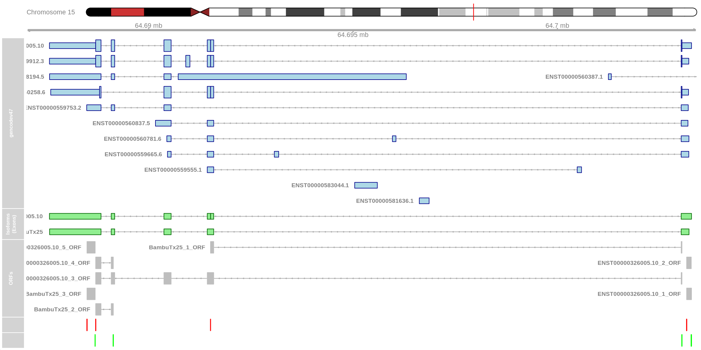
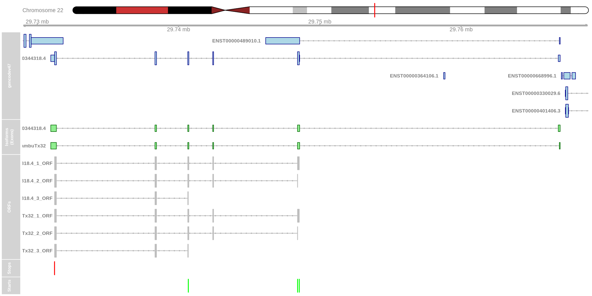

Chapter 8 Novel isoforms
With long read sequencing its possible to explore both known and novel isoforms. Novel isoform can be interesting feature to explore and here we will provide some simple analysis that one can use to extract novel isoforms and explore them in some more detail. Although the bar plots above show that the vast majority of isoforms are full-splice-matches i.e they match the reference GTF there are a few we could extract.
8.1 Find all the genes that express at least 1 novel isoform
First lets get a list of genes with at least one novel isoform
Code
# Find the genes that express at least one novel isoform and save them to a list
# Convert row names to a data frame
isoform_ids <- as.data.frame(row.names(seu_obj@assays$iso$counts))
colnames(isoform_ids) <- "IDs"
#Add in total expression
isoform_ids$Total_Expression <- rowSums(seu_obj@assays$iso$counts)
# Filter rows where 'IDs' contains the string "Bambu"
isoform_ids <- as.data.frame(isoform_ids[grepl("Bambu", isoform_ids$IDs), ]) # can comment this out if we want to do this for all isoforms
# Separate the 'IDs' column into two columns
filtered_df <- isoform_ids %>% separate(IDs, into = c("transcript_id", "gene_id"), sep = "-", extra = "merge")
isoform_counts <- filtered_df %>%
group_by(gene_id) %>%
summarise(
Isoform_Count = n(),
Total_Expression = sum(Total_Expression)
) %>%
arrange(desc(Total_Expression))
# Print or return the filtered data frame
print(isoform_counts)## # A tibble: 31 × 3
## gene_id Isoform_Count Total_Expression
## <chr> <int> <dbl>
## 1 OAZ2 1 396.
## 2 ENSG00000291214 1 159.
## 3 BambuGene6113 1 141.
## 4 ENSG00000305512 1 140.
## 5 BambuGene19505 1 139.
## 6 ENSG00000305069 1 132
## 7 BambuGene18812 1 95.8
## 8 ZMAT5 1 76.0
## 9 ENSG00000295459 1 68.7
## 10 ENSG00000231748 1 62
## # ℹ 21 more rowsIn this table we can see that we have a total of 31 novel isoforms. This number is smaller than we might expect but this is because Bambu (Chen et al., 2023) is quite conservative for single cell data and we haven’t sequenced these data very deeply. Users can change the sensitivity of Bambu when running FLAMES by setting the NDR parameter or using a different discovery method like stringtie2 (Kovaka et al., 2019).
In the above table we have ordered the the genes that contain a novel isoform by total expression. OAZ2 is our top hit. We can look at the isoform structure using IsoViz as described in the section 6.5.
Code
knitr::include_graphics("images/IsoVis_ENSG00000180304.png")
Figure 8.1: IsoViz visualization of Novel OAZ2 isoform.
8.2 Visualizing OAZ2 novel isoform
Visualizing OAZ2 reveals that the primary distinction between the novel isoform and the canonical isoform, OAZ2-201 seems to be a shorter 5’ UTR. This minor alteration at face value should not affect the canonical open reading frame (ORF). However, according to SQANTI, BambuTx25 is classified as a novel_in_catalog isoform, meaning it is an isoform not present in the reference GTF and SQANTI suggests that BambuTx25 is non-coding, which is quite surprising! Interestingly, SQANTI also indicates that the primary difference between BambuTx25 and the canonical isoforms lies in intron retention (Specified in the subcategory column).
Code
# Load necessary libraries
SQANTI[grep('BambuTx25', SQANTI$isoform), ]## isoform chrom strand length exons structural_category associated_gene associated_transcript ref_length ref_exons diff_to_TSS diff_to_TTS
## 21835 BambuTx25 chr15 - 1870 5 novel_in_catalog ENSG00000180304.14 novel 1934 6 NA NA
## diff_to_gene_TSS diff_to_gene_TTS subcategory RTS_stage all_canonical min_sample_cov min_cov min_cov_pos sd_cov FL n_indels n_indels_junc bite iso_exp
## 21835 -2 -1 intron_retention FALSE canonical NA NA NA NA NA NA NA FALSE NA
## gene_exp ratio_exp FSM_class coding ORF_length CDS_length CDS_start CDS_end CDS_genomic_start CDS_genomic_end predicted_NMD perc_A_downstream_TTS
## 21835 NA NA C non_coding NA NA NA NA NA NA NA 10
## seq_A_downstream_TTS dist_to_CAGE_peak within_CAGE_peak dist_to_polyA_site within_polyA_site polyA_motif polyA_dist polyA_motif_found ORF_seq ratio_TSS
## 21835 GTGGTTGGTCTATTCTTTAT NA NA NA NA NA NA NA <NA> NATo better understand these SQANTI results lets zoom in on exon 2 of OAZ2. Here, we observe a small break within the exon. The novel BambuTx25 does not contain this break so perhaps this change affects the resulting amino acid sequence.
Code
knitr::include_graphics("images/IsoVis_ENSG00000180304_zoom.png")
Figure 8.2: IsoViz visualization of exon 2 of OAZ2.
8.3 Functional impacts of novel isoforms
There are many ways to investigate the translated sequence and compare the protein generated from conanocial isoform and the novel one. Simple approaches may involve extracting the fasta sequence and looking for the open reading frames (ORFs) in a online tool like ‘expasy translate’ which can be found here https://web.expasy.org/translate/.
Bellow we have written a function that will take a list of isoforms from a gene and plot the ORFs as defined by the package ORFik5 (Tjeldnes et al., 2021). We will visualize these ORFS in Gviz (Hahne & Ivanek, 2016) an R package for visualizing genomic features. This analysis will help us determine if the ORF in the transcript BambuTx25 has been impacted by the change in nucleotide sequence.
Code
# Global cache for TxDb
txdb_cache <- list()
get_txdb <- function(reference_gtf) {
# Check if the TxDb for this file is already in cache
if (!is.null(txdb_cache[[reference_gtf]])) {
message("Using cached TxDb...")
return(txdb_cache[[reference_gtf]])
}
# Create TxDb and cache it
message("Creating TxDb object from reference GTF. This may take time...")
txdb <- txdbmaker::makeTxDbFromGFF(reference_gtf)
txdb_cache[[reference_gtf]] <<- txdb
return(txdb)
}
plot_isoform_ORFs <- function(reference_gtf, target_gtf, isoforms_of_interest,
chromosome, plot_start, plot_end) {
# Load genome reference
genomedb <- BSgenome.Hsapiens.UCSC.hg38
# Retrieve cached TxDb or create if not available
txdb <- get_txdb(reference_gtf)
# Import and filter GTF for specific isoforms
gtf_data <- import(target_gtf)
gtf_filtered <- gtf_data[gtf_data$transcript_id %in% isoforms_of_interest]
txdb_filtered <- txdbmaker::makeTxDbFromGRanges(gtf_filtered)
# Extract exons and convert to GRangesList
txs <- GenomicFeatures::exonsBy(txdb_filtered, by = c("tx", "gene"), use.names = TRUE)
txs_grl <- GRangesList(txs)
# Extract transcript sequences and identify ORFs
tx_seqs <- extractTranscriptSeqs(genomedb, txs_grl)
ORFs <- findMapORFs(txs_grl, tx_seqs, groupByTx = FALSE,
longestORF = FALSE, minimumLength = 30,
startCodon = "ATG", stopCodon = stopDefinition(1))
# Unlist and prepare ORF data for plotting
ORFs_unlisted <- unlist(ORFs)
ORFs_unlisted$type <- "exon"
ORFs_unlisted$transcript <- ORFs_unlisted$names
ORFs_unlisted$transcript <- paste0(ORFs_unlisted$transcript, "_ORF")
#could add in a filter for ORFs here
# Define start and stop codons
starts <- startCodons(ORFs, is.sorted = TRUE)
stops <- stopCodons(ORFs, is.sorted = TRUE)
# Visualization Tracks
gtrack <- GenomeAxisTrack()
itrack <- IdeogramTrack(genome = "hg38", chromosome = chromosome)
ref_track <- GeneRegionTrack(
range = txdb,
name = "gencodev47",
genome = "hg38",
chromosome = chromosome,
col = "darkblue",
fill = "lightblue",
arrowHead = FALSE
)
input_track <- GeneRegionTrack(
range = txdb_filtered,
name = "Isoforms (Exons)",
genome = "hg38",
chromosome = chromosome,
col = "darkgreen",
fill = "lightgreen",
arrowHead = FALSE
)
orf_track <- GeneRegionTrack(
ORFs_unlisted,
genome = "hg38",
chromosome = unique(seqnames(ORFs_unlisted)),
transcriptAnnotation = "transcript",
name = "ORFs",
col = "grey",
fill = "grey",
stacking = "squish",
)
starts_track <- AnnotationTrack(
range = starts,
name = "Starts",
genome = "hg38",
chromosome = seqnames(txs_grl[[1]])[1],
col = "green",
fill = "green",
shape = "box", # Ensure no arrows by using box shape
stacking = "dense"
)
stops_track <- AnnotationTrack(
range = stops,
name = "Stops",
genome = "hg38",
chromosome = seqnames(txs_grl[[1]])[1],
col = "red",
fill = "red",
shape = "box", # Ensure no arrows by using box shape
stacking = "dense"
)
# Plot tracks
plotTracks(list(itrack, gtrack, ref_track, input_track,
orf_track, stops_track, starts_track),
from = plot_start, to = plot_end,
transcriptAnnotation = "transcript")
}
# Example usage
plot_isoform_ORFs(
reference_gtf = "data/gencode.v47.annotation.gtf",
target_gtf = "data/FLAMES_out/isoform_annotated_unfiltered.gtf",
isoforms_of_interest = c("ENST00000326005.10", "BambuTx25"),
chromosome = "chr15",
plot_start = 64687015,
plot_end = 64703412
)
Code
plot_isoform_ORFs(
reference_gtf = "data/gencode.v47.annotation.gtf",
target_gtf = "data/FLAMES_out/isoform_annotated_unfiltered.gtf",
isoforms_of_interest = c("ENST00000326005.10", "BambuTx25"),
chromosome = "chr15",
plot_start = 64691416,
plot_end = 64691685
)Visualizing ORFs using the above code chunck shows that the BambuTx25_1_ORF is incomplete. The additional sequence (retained intron as specified by SQANTI) results in a premature stop codon shown in red which likely triggers nonsense-mediated decay (NMD). The canonical ENST00000326005.10_3_ORF is complete.
We can examine additional genes from our list. For instance, ZMAT5 has a novel isoform that utilizes a different, known splice junction in the 5’ UTR. Using the function above to examine ORFs, we can see that the ORF is unchanged compared to the canonical isoform. This may suggest some import regulatory role in the 5’ UTR yet the protein remains unchanged.
Code
knitr::include_graphics("images/IsoVis_ENSG00000100319.png")Figure 8.3: IsoViz visualization of Novel ZMAT5 isoform.
Code
plot_isoform_ORFs( reference_gtf = "../../../../resources/gencode.v47.annotation.gtf", target_gtf = "/data/scratch/users/yairp/FLAMES_Day55/outs/isoform_annotated_unfiltered.gtf", isoforms_of_interest = c("BambuTx32", "ENST00000344318.4"), chromosome = "chr22", plot_start = 29728956, plot_end = 29769011 )## Creating TxDb object from reference GTF. This may take time...## Import genomic features from the file as a GRanges object ... OK
## Prepare the 'metadata' data frame ... OK
## Make the TxDb object ... OK
ORFs found by the package ORFik may need to be filtered based on length or position when analysising differnt genes or isoforms.↩︎